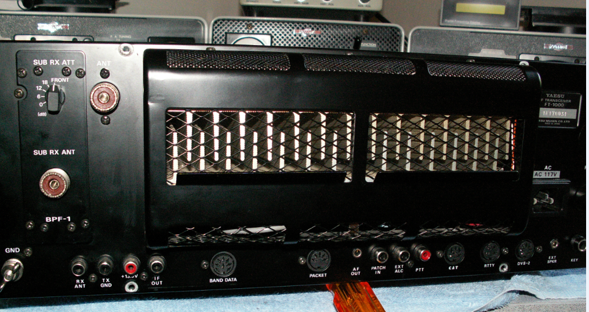
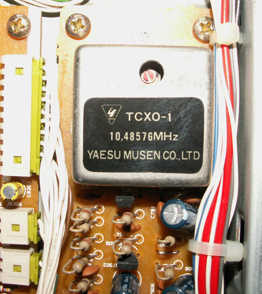

They all say FT-1000. Yaesu never put a “D” designator on the radio. The only way I know you can tell is to see if the External Bandpass module with its PL-259 and rotary switch is plugged into the rear panel on the right side of the radio. The Sub receiver is right next to it inside the cabinet. Internally I believe the “D” model came with 7 of the 8 possible selectivity filters. The only options were for a 2nd 250Hz filter and the more stable TCXO-1.   73, Bob – W6OPO From: Chat [mailto:chat-bounces@ncdxc.org] On Behalf Of Russell Bentson via Chat Any one that has an FT1000D or E radio, can you tell me what it says on the label on the back where the serial number is? Does it just say FT1000 or does it say FT1000D or FT1000E?? Thanks Russ K6KLY |